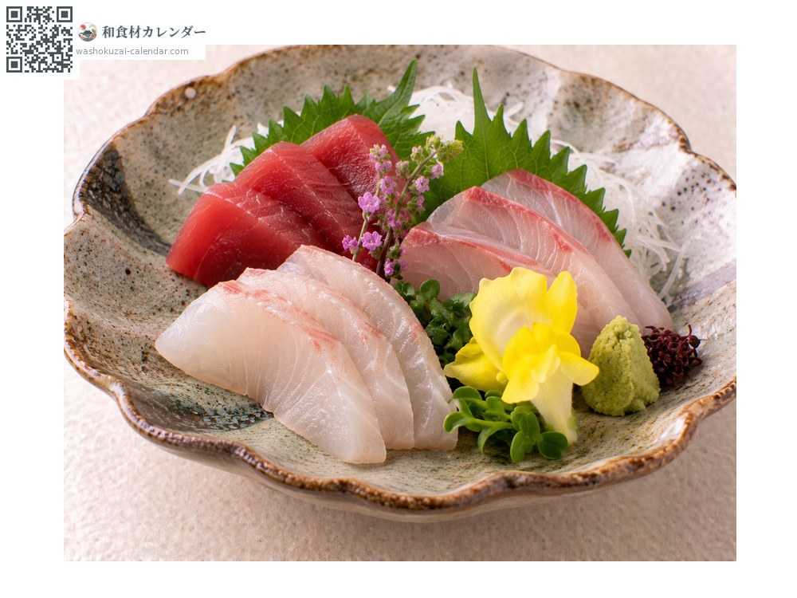
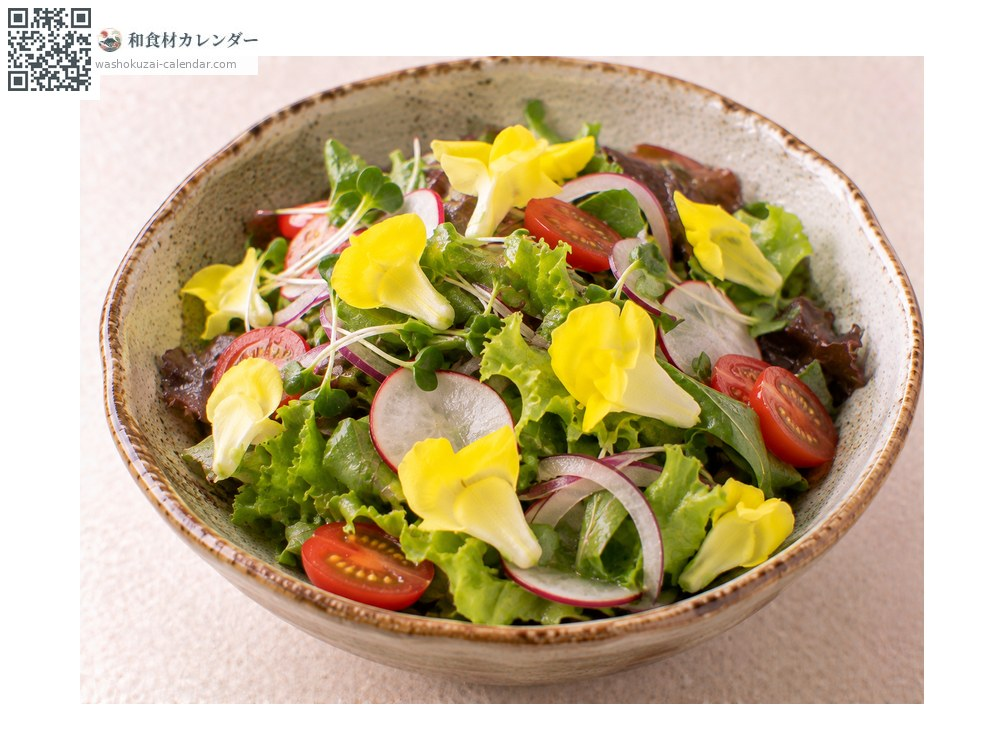
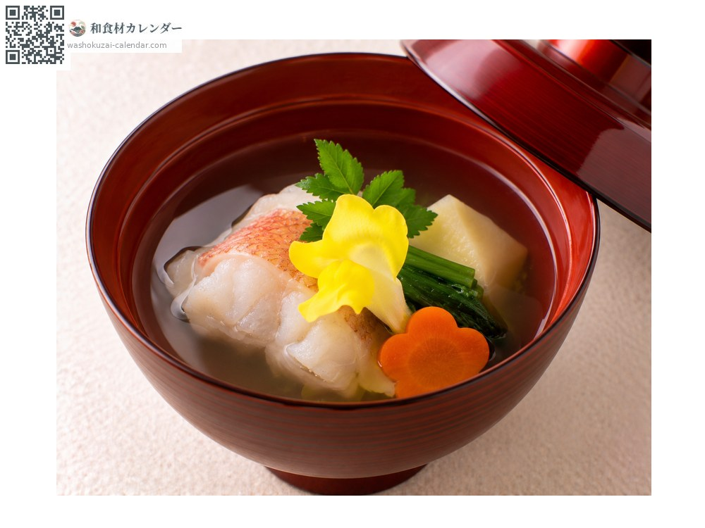

蔬菜
食用金魚草
金魚草 きんぎょそう kingyoso
別名kingyoso、kingyosou
尚未登記當令時期

當令時期
1月
2月
3月
4月
5月
6月
7月
8月
9月
10月
11月
12月
當令有供應
料理方式

生魚片配菜
在生魚片或八寸旁放一朵，黃色在盤上格外顯眼。

沙拉
撒上增添色彩，花瓣可以直接食用。

擺飾
放在湯品或前菜上，四季皆可使用。
挑選方式
花還沒開過頭、黃色鮮豔。沒有枯萎或變色。
保存方式
連盒冷藏。不耐乾燥，要保持密封。兩到三天內用完。
主要產地
小知識
是為食用而栽培的金魚草，日文名來自花形像游動的金魚。栽培方式與觀賞用不同，是以可食用為前提管理的。幾乎沒有味道，作用是替料理增添色彩與季節感。